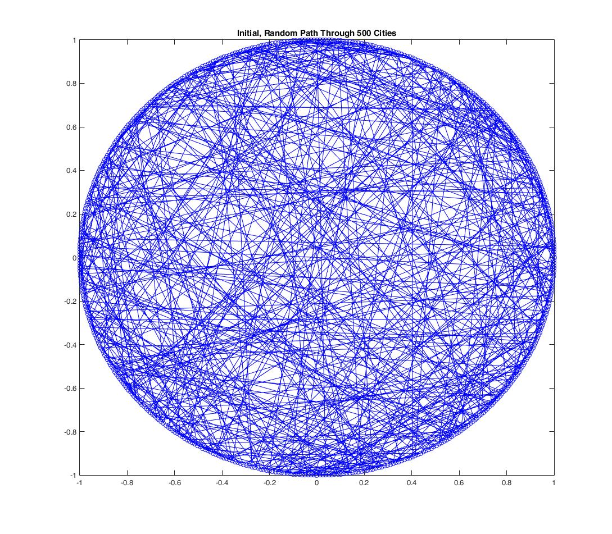
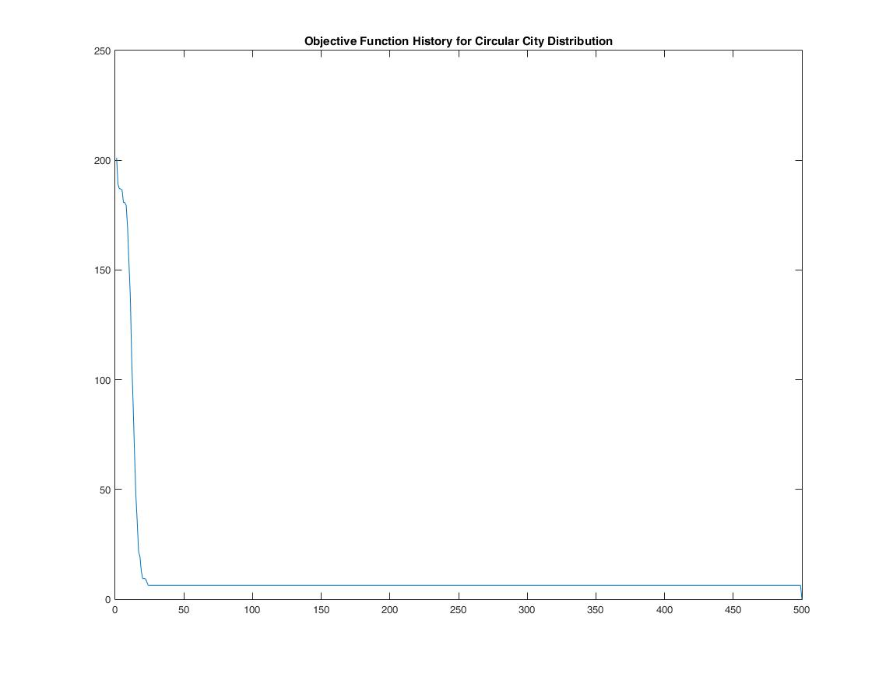
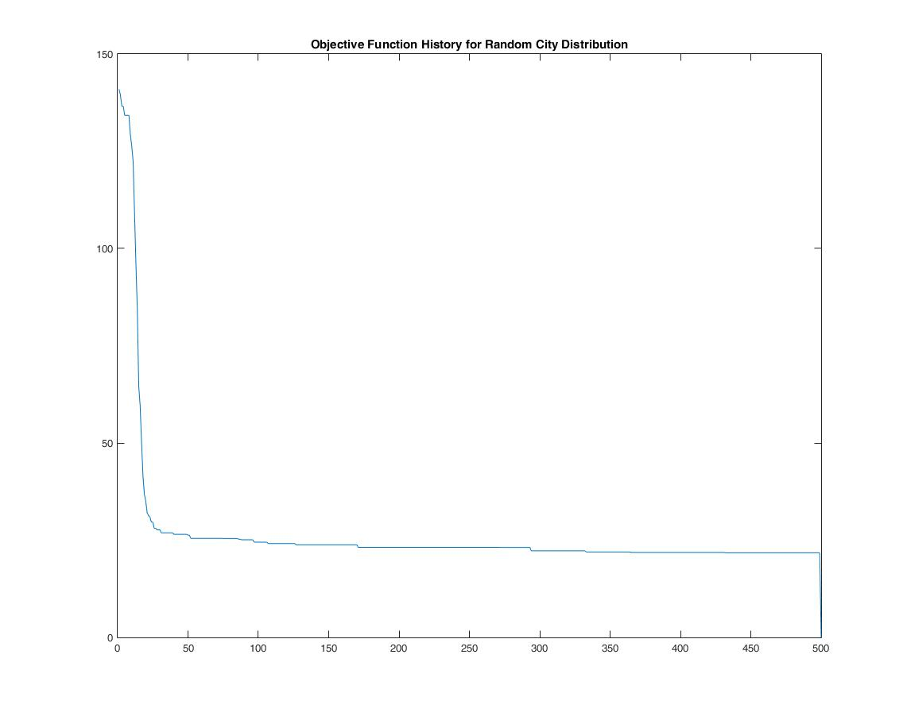

Ant Colony Optimization For the Travelling Salesman Problem
This repository contains a working Matlab implementation of the Ant Colony Optimization algorithm for the Travelling Salesman Problem. The Matlab scripts generate some number of cities in a cirular or random distribution, and then run some number of iterations to find the best path through those cities.
Circular City Distribution
Here are some figures showing the algorithm performance for a circular arrangement of cities (this is more of a sanity check, this arrangement should be easy to solve).



Random City Distribution
Here are some figures showing the algorithm performance for a random city distribution:


